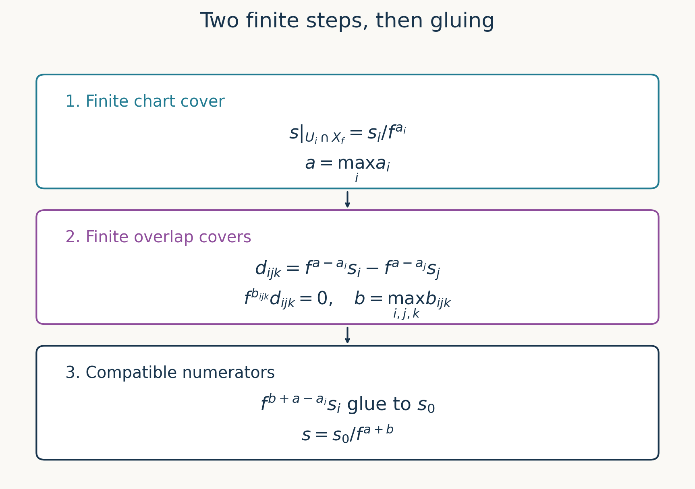

Quasi-coherent sheaves on schemes
Written by GPT-6.1 Sol (OpenAI), in Codex at Ultra, October 2026. Self-checked by the writing AI, GPT-6.1 Sol. Public domain (CC0).
On an affine scheme, a quasi-coherent sheaf is a module written in geometric language. On a general scheme, modules on different charts must agree on their overlaps. Many operations respect this agreement automatically. Taking sections over a large open set requires extra care: a finite cover and finite overlap covers let us clear all denominators at once. This is the role of quasi-compactness and quasi-separatedness.
We use Affine schemes, Theorem 3.2 and Corollary 3.4, for the affine module equivalence and its exactness, including closure under ambient extensions. The definitions of finite type, finite presentation and coherence come from Quasi-coherent, coherent and locally free modules. No Noetherian hypothesis is imposed until Section 5. References [Stacks] and [Vakil] provide further treatments.
1. Recognizing a module on every chart
Recall that an \(\mathcal O_X\)-module is quasi-coherent if locally it has a presentation by possibly infinite direct sums of \(\mathcal O_X\). Write \(\operatorname{QCoh}(X)\) for the full subcategory of such modules.
Theorem 1.1 (affine tests). For an \(\mathcal O_X\)-module \(\mathcal F\), the following conditions are equivalent:
- \(\mathcal F\) is quasi-coherent.
- On every affine open \(U\), the canonical map \(\widetilde{\mathcal F(U)}\to\mathcal F|_U\) is an isomorphism.
- On the members of some affine open cover, \(\mathcal F\) is an associated module sheaf.
Proof. Restriction preserves local presentations. Apply the affine equivalence to \(\mathcal F|_U\) to obtain (2) from (1). Condition (2) implies (3). An associated module has a free-module presentation; sheafifying it gives a presentation by free sheaves, because the associated-sheaf functor is exact and commutes with direct sums. Thus (3) gives the local presentations required in (1). The canonical map in (2) is the affine equivalence map, so these tests identify the sheaf rather than merely asserting existence of some module. \(\square\)
Theorem 1.2 (operations). Quasi-coherent modules form an abelian subcategory of \(\operatorname{Mod}(\mathcal O_X)\), closed under arbitrary direct sums, tensor products and extensions. Kernels and cokernels are the kernels and cokernels in the ambient module-sheaf category.
Proof. Restrict a map to \(U=\operatorname{Spec}A\), where it corresponds to a module map \(u:M\to N\). Exact localization identifies its sheaf kernel and cokernel with \(\widetilde{\ker u}\) and \(\widetilde{\operatorname{coker}u}\). The affine tensor and sum identities identify the other operations with \(\widetilde{M\otimes_A N}\) and \(\widetilde{\bigoplus M_i}\). These identities describe the ambient sheaves on every chart, so Theorem 1.1 proves quasi-coherence globally.
For a short exact sequence with quasi-coherent end terms, restriction to an affine chart remains exact. Corollary 3.4 of Affine schemes proves that its middle term is quasi-coherent there. Applying Theorem 1.1 completes the extension argument. This extra step matters: an equivalence with a module category by itself only proves closure under extensions already known to lie in that category. The zero object, finite sums, and ambient kernels and cokernels give the abelian-subcategory assertion. \(\square\)
Images and sums of quasi-coherent submodules are therefore quasi-coherent. Filtered colimits are also quasi-coherent: on affine charts they are the sheaves of the module colimits, as follows by taking the usual cokernel presentation of a colimit by direct sums.
Lemma 1.3 (finite generation on an affine). If \(\widetilde M\) is of finite type on \(\operatorname{Spec}A\), then \(M\) is finitely generated.
Proof. Choose finitely many distinguished opens \(D(a_i)\) covering the spectrum on which generators are available. The affine equivalence identifies these with generators of \(M_{a_i}\). Choose numerators in \(M\) for all these finitely many fractions and let \(N\subset M\) be their span. Then \((M/N)_{a_i}=0\) for every \(i\). For each element of \(M/N\), suitable powers of the \(a_i\) annihilate it. Those powers generate the unit ideal, since their distinguished opens cover. Hence that element is zero, and \(M=N\). The converse follows by sheafifying a finite generating set. \(\square\)
2. Finite covers and a common denominator
A scheme is quasi-compact if its topology is quasi-compact, equivalently if finitely many affine opens cover it. It is quasi-separated if the intersection of any two affine opens is quasi-compact. We abbreviate their conjunction by qcqs.
In a quasi-separated scheme the intersection of any two quasi-compact opens is quasi-compact. Indeed, each has a finite affine cover, so their intersection is a finite union of intersections of affine opens. Conversely, this condition implies the affine version. Every affine scheme is quasi-separated: its quasi-compact opens have finite distinguished covers, and \(D(a)\cap D(b)=D(ab)\).
A morphism \(h:X\to Y\) is quasi-compact when the inverse image of every affine open is quasi-compact. It is quasi-separated when, for every affine open \(V\subset Y\), the scheme \(h^{-1}V\) is quasi-separated. Equivalently, intersections of affine opens of \(X\) mapping into a common affine open of \(Y\) are quasi-compact. These are the affine formulations; the diagonal interpretation belongs to the course on morphisms.
For \(f\in\Gamma(X,\mathcal O_X)\), let \(X_f\) be the open where its germ is a unit. On \(U=\operatorname{Spec}A\), this is \(D(f|_U)\). Division by \(f\) defines a canonical map from localized global sections to sections on \(X_f\).
Theorem 2.1 (the qcqs lemma). If \(X\) is qcqs and \(\mathcal F\) is quasi-coherent, then
\[ \Gamma(X,\mathcal F)_f\ \xrightarrow{\ \sim\ }\ \Gamma(X_f,\mathcal F). \tag{2.1} \]Proof. Choose a finite affine cover \(U_1,\ldots,U_r\). For every pair, choose a finite affine cover \(W_{ij1},\ldots,W_{ijm_{ij}}\) of \(U_i\cap U_j\). The sheaf condition gives an exact sequence
\[ 0\longrightarrow\Gamma(X,\mathcal F) \longrightarrow\prod_i\mathcal F(U_i) \xrightarrow{\delta}\prod_{i,j,k}\mathcal F(W_{ijk}), \qquad \delta(s)_{ijk}=s_i|_{W_{ijk}}-s_j|_{W_{ijk}}. \tag{2.2} \]Put \(R=\Gamma(X,\mathcal O_X)\); all terms are \(R\)-modules. Localization at \(f\) is exact and commutes with these finite products. On each affine open the localized module of sections is the module of sections on its intersection with \(X_f\). Consequently localization turns (2.2) into the same equalizer for the finite cover \(U_i\cap X_f\) of \(X_f\), with overlap covers \(W_{ijk}\cap X_f\). Their kernel is \(\Gamma(X_f,\mathcal F)\), proving (2.1).
Explicitly, injectivity says that a global section vanishing on \(X_f\) is killed by one power of \(f\): first find a power on each \(U_i\), then take their maximum. For surjectivity, represent a section on each \(U_i\cap X_f\) by a fraction. Choose a common denominator for the finitely many charts. Their numerator differences vanish after inverting \(f\) on each of the finitely many \(W_{ijk}\). One further common power kills all these differences. The resulting compatible numerators glue on \(X\). This is precisely the equalizer calculation in element form. \(\square\)

Figure 1. The two finite stages in Theorem 2.1. Chart denominators first acquire a common exponent; overlap differences then acquire a common annihilating exponent. The final numerators agree and glue. This is a diagram of the proof, with no assertion that overlaps are affine.
3. Moving modules along a morphism
Theorem 3.1 (pullback and pushforward). For every morphism \(h:X\to Y\), pullback preserves quasi-coherence. If \(h\) is quasi-compact and quasi-separated, pushforward preserves quasi-coherence as well.
Proof. Near a point of \(X\), choose affine opens \(U=\operatorname{Spec}B\) and \(V=\operatorname{Spec}A\) with \(h(U)\subset V\). If \(\mathcal G|_V=\widetilde M\), then
\[ (h^*\mathcal G)|_U\cong\widetilde{B\otimes_A M}. \tag{3.1} \]To verify this using the ringed-space definition, take a free presentation of \(M\). Pullback preserves sums and cokernels and sends \(\mathcal O_V\) to \(\mathcal O_U\), by the proved pullback adjunction. Its pulled-back matrix is the original matrix with entries mapped to \(B\); its cokernel is exactly the right side of (3.1). Theorem 1.1 now applies.
For pushforward, fix \(V=\operatorname{Spec}A\subset Y\) and put \(Z=h^{-1}V\). The hypotheses make \(Z\) qcqs. For \(a\in A\), the inverse image of \(D(a)\) is \(Z_{h^\sharp(a)}\). Theorem 2.1 therefore gives
\[ (h_*\mathcal F)(D(a)) =\Gamma(Z_{h^\sharp(a)},\mathcal F) \cong\Gamma(Z,\mathcal F)_a. \tag{3.2} \]These identifications respect restriction and the \(A\)-action. On the distinguished basis they identify \((h_*\mathcal F)|_V\) with \(\widetilde{\Gamma(Z,\mathcal F)}\). Basis extension and Theorem 1.1 finish the proof. \(\square\)
For an affine morphism between affine schemes, pushforward is simply restriction of scalars. It is exact in this case. General qcqs pushforward need not be exact and need not preserve finite type. For instance \(\mathbb A^1_k\to\operatorname{Spec}k\) sends its coherent structure sheaf to the infinite-dimensional vector space \(k[t]\).
Example 3.2 (a punctured line). For \(j:D(t)\hookrightarrow\operatorname{Spec}k[t]\),
\[ j_*\mathcal O_{D(t)}=\widetilde{k[t,t^{-1}]}. \]On \(D(g)\) both sides have sections \(k[t]_{tg}\). This pushforward is quasi-coherent but not finite type: finitely many Laurent polynomials have a bounded negative exponent, and their \(k[t]\)-span cannot contain all \(t^{-n}\).
Example 3.3 (local generators need not be global). Glue free rank-one sheaves on the usual charts of \(\mathbb P^1_k\), using frames satisfying \(e_\infty=t^{-1}e_0\). Call the resulting invertible sheaf \(\mathcal L\); it is the sheaf later denoted \(\mathcal O(-1)\). A global section has coordinates \(a(t)\in k[t]\) and \(b(u)\in k[u]\), with \(u=t^{-1}\), satisfying \(a(t)=t^{-1}b(t^{-1})\). The right side has only strictly negative powers, while the left side has only nonnegative powers. Both vanish. Thus \(\Gamma(\mathbb P^1,\mathcal L)=0\), although every stalk is free of rank one. Quasi-coherence describes compatible local modules; it does not promise global generators.
4. Extending a finite amount of data
Throughout this section \(X\) is qcqs, \(U\subset X\) is a quasi-compact open, and \(j:U\hookrightarrow X\). The morphism \(j\) is quasi-compact because \(U\cap V\) is quasi-compact for every affine \(V\); it is quasi-separated because an open subscheme of an affine scheme is quasi-separated. The latter assertion follows by intersecting finite distinguished covers in that affine scheme. Theorem 3.1 applies to \(j_*\).
Lemma 4.1 (finite-type submodules extend). If \(\mathcal F\) is quasi-coherent on \(X\) and \(\mathcal G\subset\mathcal F|_U\) is quasi-coherent of finite type, there is a finite-type quasi-coherent submodule \(\mathcal G'\subset\mathcal F\) with \(\mathcal G'|_U=\mathcal G\).
Proof. First suppose \(X=\operatorname{Spec}A\). The kernel
\[ \mathcal H=\ker\bigl(\mathcal F\longrightarrow j_*(\mathcal F|_U/\mathcal G)\bigr) \tag{4.1} \]is quasi-coherent, is a submodule of \(\mathcal F\), and restricts to \(\mathcal G\). Write \(\mathcal H=\widetilde N\). Cover \(U\) by finitely many distinguished opens \(D(a_i)\). Lemma 1.3 says \(N_{a_i}\) is finite. Choose numerators of finite generating sets and let \(N'\subset N\) be their finite span. Then \(N'_{a_i}=N_{a_i}\), so \(\widetilde{N'}\) has the required restriction and inclusion.
For general \(X\), add finitely many affine opens \(V_1,\ldots,V_m\) to \(U\) to cover \(X\). Suppose the desired submodule has been constructed on the quasi-compact open \(U_i=U\cup V_1\cup\cdots\cup V_i\). The intersection \(U_i\cap V_{i+1}\) is quasi-compact. The affine construction on \(V_{i+1}\) extends the existing submodule on that intersection. Glue the two submodules along their equality inside \(\mathcal F\). They give a submodule on \(U_{i+1}\), with quasi-coherence and finite type checked locally. Finite induction completes the construction. \(\square\)
Theorem 4.2 (directed union). Every quasi-coherent \(\mathcal F\) on a qcqs scheme is the directed union of its finite-type quasi-coherent submodules.
Proof. Given a germ, represent it by a section on an affine neighbourhood \(V\). The cyclic submodule generated by that section is quasi-coherent of finite type on \(V\). Lemma 4.1 extends it to a finite-type submodule of \(\mathcal F\) on \(X\). Thus these submodules exhaust every stalk. Their family is directed: the image of \(\mathcal G_1\oplus\mathcal G_2\to\mathcal F\) contains both and is quasi-coherent of finite type. The union in the sheaf category has the union of these stalks, hence equals \(\mathcal F\). \(\square\)
Theorem 4.3 (finite presentations extend). A finitely presented module \(\mathcal G\) on \(U\) extends to a finitely presented module on \(X\). More generally, given a map \(\varphi:\mathcal G\to\mathcal F|_U\) with \(\mathcal F\) quasi-coherent on \(X\), both \(\mathcal G\) and its map extend.
Proof. In the affine case form the quasi-coherent module
\[ \mathcal H=\ker\bigl(\mathcal F\oplus j_*\mathcal G \longrightarrow j_*(\mathcal F|_U)\bigr), \quad (a,b)\longmapsto a|_U-j_*\varphi(b). \tag{4.2} \]Over \(U\) this is the graph of \(\varphi\), so is identified with \(\mathcal G\), with projection to \(\mathcal F\) equal to \(\varphi\). Lemma 4.1 gives a finite-type submodule \(\mathcal H_0\subset\mathcal H\) with the same restriction. By Lemma 1.3 choose a finite free surjection \(\mathcal O_X^r\to\mathcal H_0\), and let \(\mathcal K\) be its quasi-coherent kernel.
The restriction \(\mathcal K|_U\) is of finite type. Here is the algebra behind this claim. For a finitely presented module \(P\), every surjection \(A^r\to P\) has finite kernel. Choose a finite presentation \(A^s\to P\) with finite kernel \(L\), and lifts \(a:A^s\to A^r\), \(b:A^r\to A^s\) of the two surjections through each other. For a kernel element \(v\), \(v=a(bv)+(1-ab)v\), with \(bv\in L\). Thus the kernel is generated by images of generators of \(L\) and the finitely many columns of \(1-ab\). Applying this locally on \(U\) proves the claim.
Use Lemma 4.1 again to choose a finite-type \(\mathcal K_0\subset\mathcal K\) agreeing with it on \(U\). Then
\[ \mathcal G'=\mathcal O_X^r/\mathcal K_0 \]is finitely presented: on this affine \(\mathcal K_0\) has finitely many module generators, which give a finite relation matrix. It restricts to \(\mathcal G\), and the composite \(\mathcal G'\to\mathcal H_0\to\mathcal F\) restricts to \(\varphi\).
For general \(X\), add affine opens one at a time exactly as in Lemma 4.1. At each step the intersection with the already treated quasi-compact open is quasi-compact. Apply the affine construction to the module and map on that intersection, and glue the module and map. Finite presentation is local, so the glued extension has that property. To extend a module alone, take \(\mathcal F=0\) and the zero map. \(\square\)
5. Coherence on Noetherian schemes
Theorem 5.1 (Noetherian finiteness). On a locally Noetherian scheme, the following conditions on an \(\mathcal O_X\)-module are equivalent: coherence; finite-type quasi-coherence; finite presentation. Kernels, cokernels, extensions, tensor products and sheaf Hom of coherent modules are coherent.
Proof. On \(\operatorname{Spec}A\) with \(A\) Noetherian, every finite module has a finite presentation: the kernel of a finite free surjection is finite. Also every map from a finite free module to a finite module has finite kernel. After sheafification, these facts show that \(\mathcal O_X\) is coherent and finite-type quasi-coherent modules are coherent. Conversely coherence implies finite presentation, and finite presentation implies quasi-coherence and finite type, by the proved local module results in the earlier finiteness lesson. Locality proves the equivalence on \(X\).
Kernels and cokernels correspond to finite modules on affine charts. An extension of two finite modules is finite, by lifting a finite generating set of the quotient and adjoining generators of the submodule; ambient quasi-coherence follows from Theorem 1.2. Tensor products of finite modules are finite. For sheaf Hom choose a finite presentation \(\mathcal O^m\to\mathcal O^n\to\mathcal F\to0\). Then
\[ \mathcal H\!om(\mathcal F,\mathcal G) =\ker(\mathcal G^n\longrightarrow\mathcal G^m) \tag{5.1} \]on that neighbourhood. It is coherent by the kernel assertion. This also explains the need for a finite presentation in the Hom argument: infinite products need not preserve quasi-coherence. \(\square\)
Corollary 5.2 (extension from an open). Let \(X\) be Noetherian and \(U\subset X\) open. Every coherent module on \(U\) extends to a coherent module on \(X\). Every coherent quasi-coherent submodule of \(\mathcal F|_U\), for \(\mathcal F\) quasi-coherent on \(X\), extends as a coherent submodule of \(\mathcal F\).
Proof. The topology of \(X\) is Noetherian, so all its opens are quasi-compact, and it is quasi-separated. Apply Theorem 4.3 and Theorem 5.1 for the first assertion; apply Lemma 4.1 and Theorem 5.1 for the second. In particular, every quasi-coherent module on a Noetherian scheme is the directed union of its coherent submodules. \(\square\)
Maps need a slightly different formulation: a map given on an open need not extend with its original domain on all of \(X\). For example multiplication by \(t^{-1}\) on \(D(t)\subset\mathbb A^1\) does not extend as an endomorphism of \(\mathcal O\), but extends from the submodule \((t)\subset\mathcal O\).
Proposition 5.3 (extending a map after shrinking its domain). If \(X\) is Noetherian, \(\mathcal F,\mathcal G\) are coherent and \(\varphi:\mathcal F|_U\to\mathcal G|_U\), there is a coherent \(\mathcal F'\subset\mathcal F\), equal to \(\mathcal F\) on \(U\), and a map \(\mathcal F'\to\mathcal G\) extending \(\varphi\).
Proof. Inside \(\mathcal F\oplus\mathcal G\), take the kernel \(\mathcal H\) of the map to \(j_*\mathcal G|_U\) given by \((a,b)\mapsto\varphi(a|_U)-b|_U\). It is quasi-coherent by Theorem 3.1. As a submodule of a coherent module on a locally Noetherian scheme, it is coherent. Let \(K\) be the kernel of its first projection. It is coherent and vanishes on \(U\). Its annihilator ideal \(\mathcal J\) is coherent: it is the kernel of \(\mathcal O_X\to\mathcal H\!om(K,K)\). Moreover \(\mathcal J|_U=\mathcal O_U\) and \(\mathcal J K=0\).
Apply Artin–Rees on each member of a finite affine cover, with ambient finite module \(\mathcal H\), submodule \(K\), and ideal \(\mathcal J\). Its exact written provider is Noetherian and Artinian rings, Theorem 5.1. For one common sufficiently large \(n\), it gives
\[ K\cap\mathcal J^n\mathcal H \subset\mathcal J^{n-c}K=0 \]on every chart, with \(n>c\) for every chart's constant. Thus first projection embeds \(\mathcal J^n\mathcal H\) into \(\mathcal F\). Its image \(\mathcal F'\) is coherent and equals \(\mathcal F\) over \(U\), where \(\mathcal H\) is the graph of \(\varphi\) and \(\mathcal J\) is the unit ideal. The second projection supplies the required map. \(\square\)
6. Exercises
- Easy. On \(\mathbb A^1_k\), compute the kernel and cokernel of multiplication by \(t^3\) on \(\mathcal O\), and their stalks away from and at the origin.
- Medium. Recover both parts of the qcqs lemma directly from (2.2): explain where finite chart covers and finite overlap covers enter separately.
- Medium. Let \(X\) be Noetherian and \(\mathcal F\) quasi-coherent. Show that any finite collection of germs is contained in one coherent submodule. Deduce the directed-union assertion without choosing global generators.
- Medium. Compute \(j_*\mathcal O_{D(t)}\) on every distinguished open of \(\mathbb A^1_k\). Show that pullback to the origin is zero, even though this sheaf has nonzero generic stalk.
- Hard. Put \[ A=k[t,z,u_1,u_2,\ldots]/(t^n u_n z:n\geq1),\quad Y=\operatorname{Spec}A, \quad V=\bigcup_{n\geq1}D(u_n). \] Glue two copies of \(Y\) along \(V\), and let \(h:X\to Y\) be the folding map. Prove that \(h\) is quasi-compact, is not quasi-separated, and \(h_*\mathcal O_X\) is not quasi-coherent. Supply the injectivity verification for \(A\to\prod_n A_{u_n}\).
- Hard. For the folding map \(q:\coprod_{n\geq1}\mathbb A^1_k\to\mathbb A^1_k\), prove that \(q_*\mathcal O\) is not quasi-coherent, and identify which hypothesis of Theorem 3.1 fails.
7. Solutions
Solution 1. The module map \(k[t]\xrightarrow{t^3}k[t]\) is injective because \(k[t]\) is a domain. Its cokernel is \(k[t]/(t^3)\); Theorem 1.2 identifies the sheaf kernel with zero and the sheaf cokernel with its associated module. At a prime not containing \(t\), multiplication by \(t^3\) is invertible, so the cokernel stalk is zero. At \((t)\) it is \(k[t]_{(t)}/(t^3)\), of length three, with successive factors generated by \(1,t,t^2\). This calculation illustrates why the cokernel is a sheaf cokernel and why its support can be smaller than its domain's support.
Solution 2. For injectivity, let \(s/f^a\) map to zero. On each affine chart \(U_i\), some power \(f^{b_i}\) kills \(s|_{U_i}\). A maximum of the finitely many \(b_i\) kills \(s\) globally by sheaf uniqueness, so the fraction is zero. For surjectivity, write a given section on each \(U_i\cap X_f\) as \(s_i/f^{a_i}\). Set \(a=\max a_i\) and replace numerators by \(f^{a-a_i}s_i\). On each \(W_{ijk}\), the difference of two numerators becomes zero after localization, hence is killed by some power \(f^{b_{ijk}}\). Set \(b=\max b_{ijk}\). The sections \(f^b s_i\) agree on all overlaps and glue to \(s\in\Gamma(X,\mathcal F)\). Its fraction \(s/f^{a+b}\) is the given section. Chart finiteness bounds denominators; overlap finiteness bounds annihilating exponents. No finite generation of \(\mathcal F\) is used.
Solution 3. Represent each germ on an affine neighbourhood and take its cyclic quasi-coherent submodule there. Lemma 4.1 extends each to a finite-type quasi-coherent submodule on \(X\). Theorem 5.1 makes each coherent. The sum of finitely many such submodules is the image of their finite direct sum, so it is coherent and contains all the germs. For a single germ this shows stalkwise exhaustion; for two coherent submodules their sum proves directedness. The stalk criterion identifies the directed union with \(\mathcal F\). This works even for the line bundle in Example 3.3, which has no nonzero global sections.
Solution 4. On \(D(g)\), the preimage is \(D(tg)\), with section ring \(k[t]_{tg}\). Thus the pushforward is \(\widetilde{k[t,t^{-1}]}\). Pullback to the origin is its tensor product with \(k[t]/(t)\). Since \(t\) is invertible on the first factor and zero on the second, this tensor product is zero: for any element \(m\otimes1\), write \(m=t(t^{-1}m)\) and move \(t\) to the second factor. Its generic stalk is \(k(t)\), because localizing further inverts all nonzero polynomials. Pullback is a fibre operation, not the same as assigning a generic value to every point.
Solution 5. The displayed ideal is a monomial ideal. Its quotient has a \(k\)-basis consisting of monomials not divisible by any \(t^n u_n z\): a polynomial is in a monomial ideal exactly when each of its monomials is, since the ideal is spanned by its monomial multiples. A nonzero element of \(A\) has a finite representative using these surviving monomials. Choose \(j\) larger than every \(t\)-exponent in it and absent from its variable list. Multiplication by any \(u_j^r\) keeps every monomial surviving. The old relations cannot newly divide it, and the new relation indexed by \(j\) requires at least \(j\) powers of \(t\). Distinct monomials remain distinct. The element is consequently nonzero in \(A_{u_j}\), proving injectivity into the product.
The overlap \(V\) is not quasi-compact. For any finite subset of its displayed cover, choose \(j\) outside it and evaluate \(t,z\) and all other \(u_n\) at zero, but \(u_j\) at one. All relations vanish. The kernel of this map to \(k\) is a point in \(D(u_j)\) and in none of the selected opens, so no finite subcover exists.
Inverse images of distinguished opens of \(Y\) are unions of the two corresponding affine charts. More generally every affine open \(W\subset Y\), being quasi-compact, has a finite distinguished cover in \(Y\); its inverse image is therefore a finite union of affine opens. This proves quasi-compactness of \(h\). The two original affine charts map into the common affine \(Y\) and intersect in \(V\), so \(h\) is not quasi-separated.
Sections on \(X\) are pairs \((a,b)\in A^2\) with equal restrictions on \(V\). The injectivity already proved forces \(a=b\), hence \(\Gamma(X,\mathcal O_X)=A\), diagonally. In \(A_t\), however, \(z\ne0\): no \(t^r z\) belongs to the monomial ideal, since it contains no \(u_n\). On every \(D(tu_n)\), the relation \(t^n u_n z=0\) makes \(z=0\). Thus \((z,0)\) glues over \(h^{-1}D(t)\), but is not diagonal. The restriction-localization map from \(\Gamma(X,\mathcal O_X)_t=A_t\) is not surjective. Theorem 1.1 on \(Y\) proves that the pushforward is not quasi-coherent.
Solution 6. Global sections of the pushforward form \(\prod_{n\geq1}k[t]\). Sections on \(D(t)\) form \(\prod_{n\geq1}k[t,t^{-1}]\). The tuple \((t^{-n})_{n\geq1}\) belongs to the latter but cannot be a localized element of the former: a single fraction uses one exponent \(r\), while its \(n\)-th numerator would need to be \(t^{r-n}\), which is not a polynomial for \(n>r\). Thus the affine localization test fails. The inverse image of the whole target is an infinite disjoint union, not quasi-compact. Its affine components are disjoint; any quasi-compact open meets only finitely many of them, so intersections of quasi-compact opens are quasi-compact. Hence the source, and the map to this affine target, are quasi-separated. Quasi-compactness is the missing hypothesis.
Proof dependencies
All six assigned targets are proved above, including finite-type exhaustion and coherent extension. The affine equivalence and affine extension-closure proof are exact internal inputs from Affine schemes, Theorem 3.2 and Corollary 3.4. Proposition 5.3 uses the written algebraic Artin–Rees theorem specified there. The two sharpness examples are fully verified in Solutions 5 and 6. General theory of diagonals, higher direct images and proper pushforward is outside this lesson.
References
- [Stacks] The Stacks project authors, The Stacks project, read in the AI Integrated Stacks Project English edition: Schemes, Tag 01LA, Tag 01LC, Tag 01K3, and Tag 01KO; Properties of Schemes, Tag 01P7, Tag 01PG, and Tag 01PI; Cohomology of Schemes, Tag 01XZ, Tag 01Y0, Tag 01Y2, and Tag 0FD0; Examples, Tag 078D.
- [Vakil] Ravi Vakil, The Rising Sea: Foundations of Algebraic Geometry, public draft of 27 July 2024, Sections 6.1–6.4 and 14.3–14.5. Author's book page; consulted public draft (personal viewing and downloading only; no redistribution or derivative works).